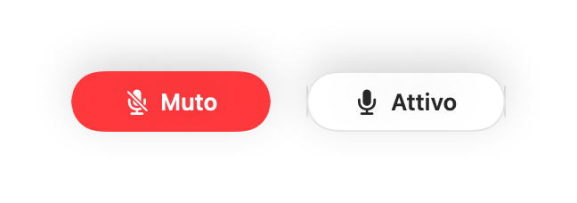

Come disattivare una riunione rapida di Slack da qualsiasi app su Mac
I controlli delle riunioni rapide su Slack si trovano in una finestrella che si perde facilmente dietro al lavoro, e la sua scorciatoia di disattivazione funziona solo se Slack è in primo piano.
Muffle disattiva il microfono per Slack e qualsiasi altra app con una scorciatoia o una pressione degli AirPods, ovunque ti trovi sul tuo Mac.
Prova Muffle gratis per 3 giorniIn arrivo sul Mac App Store
Disattiva la riunione rapida da qualsiasi schermata
- Installa Muffle e consenti l'accesso al microfono.
- Avvia o partecipa a una riunione rapida su Slack.
- Premi Control-Opzione-M o lo stelo degli AirPods per disattivare il microfono.
- Dai un'occhiata alla barra dei menu: il colore rosso indica che nessuno può sentirti.

- Il mini controller fluttuante mostra lo stato del microfono durante ogni riunione.
- Tieni premuta la scorciatoia per dire qualcosa al volo, tornando subito muto non appena la rilasci.
Domande frequenti
Funziona sia con l'app Slack sia con Slack nel browser?
Sì. Muffle disattiva direttamente il microfono, quindi funziona in entrambi i casi.
I colleghi vedranno che ho il microfono disattivato?
Slack potrebbe mostrare il microfono ancora acceso. Gli altri sentiranno silenzio finché Muffle mantiene il microfono disattivato.